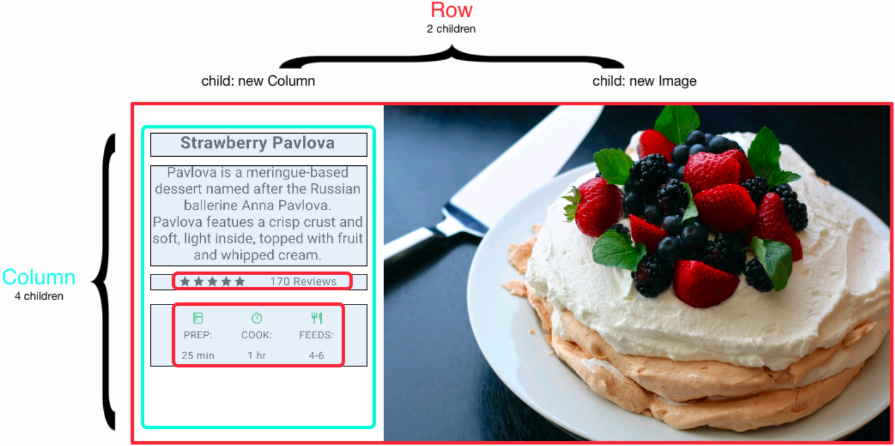
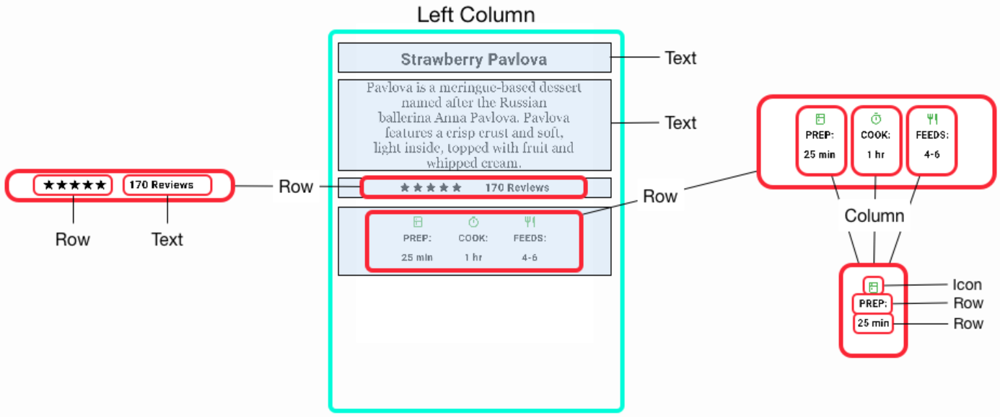

Flutter & Dart
-
What is Flutter?
Flutter is Google’s mobile app SDK for crafting high-quality native interfaces on iOS and Android in record time. Flutter works with existing code, is used by developers and organizations around the world, and is free and open source.
-
What is Dart?
Dart is a class-based, single-inheritance, pure object-oriented programming language. Dart is optionally typed and supports reified generics and interfaces. Dart programs may be statically checked. The static checker will report some violations of the type rules, but such violations do not abort compilation or preclude execution.
Why Dart?
-
→ Developer productivity
Saves engineering resources by letting developers create apps for both iOS and Android with the same codebase. Using a highly productive language accelerates developers further and makes Flutter more attractive. -
Object-orientation
The industry uses object-oriented languages already, so it is natural to not reinvent the wheel. -
Fast allocation
functional-style flow that depends heavily on the underlying memory allocator efficiently handling small, short-lived allocations.
Why Dart?
-
→ Client-optimized language
Dart started out being optimized for web apps, and is evolving to provide great support for mobile apps. Dart also runs on the command line and server-side. -
→ Compatibility
Many web apps are written in JavaScript because it is supported by a variety of web browsers. Dart is also meant for the web. However for most environments that do not support Dart, it can be easily compiled to JavaScript. -
→ Errors
Dart is designed to be able to tackle problems and catch errors easier. This is why Dart has async/await, generators, string interpolation, earlier error detection and much more.
Other Dart Framework: Angular Dart
-
If you want to develop desktop apps, AngularDart is recommended.
-
Hundreds of Google engineers use it to build sophisticated, mission-critical apps that bring in much of Google's revenue.
Hot Reload
To use hot reload: run a Flutter app, modify dart file, and click Hot Reload
State is maintained and combined with updated code
Helps with quickly experimenting with User Interfaces and fixing errors. Small changes take only a couple seconds.
"Hot reload works by injecting updated source code files into the running Dart Virtual Machine (VM). After the VM updates classes with the new versions of fields and functions, the Flutter framework automatically rebuilds the widget tree, allowing you to quickly view the effects of your changes." (flutter.io/hot-reload/)
Live Demonstration Incoming...
Functional
Functions can be passed as arguments or assigned to variables
Functions can be declared using => notation
Anonymous functions supported
[1, 2, 3].map((x) => x*x)
//[1, 4 , 9]
Operator Overriding
Override operators of a Class (e.g. ==).
HashSet uses the == operator to search for elements instead of the .equals method
Override the == operator to use a HashSet with a custom Class
@override
bool operator ==(other) {
return (this.r == other.r) && (this.c == other.c);
}
Cat operator +(Cat other) {
return new Kitten(dna + other.dna);
}
Optional named parameters and default parameter values
To declare a function/constructor with optional named parameters, use {param1, param2, ...}
To call a function/constructor with optional named parameters, use paramName: value
To declare a function/constructor with default parameter values use : or =
Widgets are easily customizable and easily used with few lines of code. Container constructor consists of 12 optional named parameters. To call the constructor, only write code for parameters you need customized and the rest of the parameters have default values.
//Declaration of named constructor TableBorder.all({ Color color: const Color(0xFF000000), double width: 1.0, BorderStyle style: BorderStyle.solid }) //Call new TableBorder.all( color: Colors.blueAccent ) //color is Colors.blueAccent, width is 1.0, style is BorderStyle.solid
No Undefined
JavaScript interpreter returns undefined when accessing a variable or object property that is not yet initialized.
Attempting to access uninitialzed values can generate undefined related errors, which is pretty common. This have effect on code safety. Dart omits this type of value to prevent those errors.
let company;
company; // => undefined
let person = { name: 'John Smith' };
person.age; // => undefined
Future and Async
Even though Dart is single threaded, it could run the rest of the code without waiting for functions that do a lot of work
Dart uses an asynchronous model, and you can return values of functions that do a lot of work using a Future without having it finish.
Future is basically a place holder. It queues up the work of the function and then returns an uncompleted Future object.
When the function is done doing its job, the Future object then becomes complete with the returned value.
To get the value that Future represents, we use async.
Using await ensures that the statement completes before moving on.
printDailyNewsDigest() async {
String news = await gatherNewsReports();print(news);
}
main() {
printDailyNewsDigest();
printWinningLotteryNumbers();
printWeatherForecast();
printBaseballScore();
}
Console Output:
Winning lotto numbers: [23, 63, 87, 26, 2]
Tomorrow's forecast: 70F, sunny.
Baseball score: Red Sox 10, Yankees 0
gathered news goes here
Flutter is about Widgets.
-
User Interfaces in Flutter apps use Widgets as a building block. A widget can define a structure (e.g. button or menu), a style (e.g. font or color), a layout (e.g. center or padding), and etc.
-
Widgets form a hierarchy using composition. Widgets have multiple child Widgets that merge to make a customizable result. Layouts are very easy to make with Widgets.
-
Define a Widget by implementing build method that returns a tree of Widgets. Each of the Widgets recursively builds until the tree is complete.
Layouts
Row, Column, Text, and Icon are all Widgets
 Our Application
NyanDoku.
A spin on the classic Sudoku game. Instead of numbers, we use images of cats to keep the game interesting! Cells with grey backgrounds mean that those are given cells and are unchangeable. The bottom area of the screen is the "palette." Choose a cat and put it on the board! Game is complete with conflict detection.